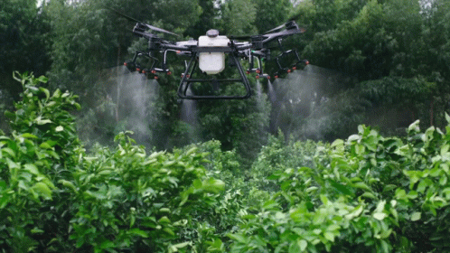
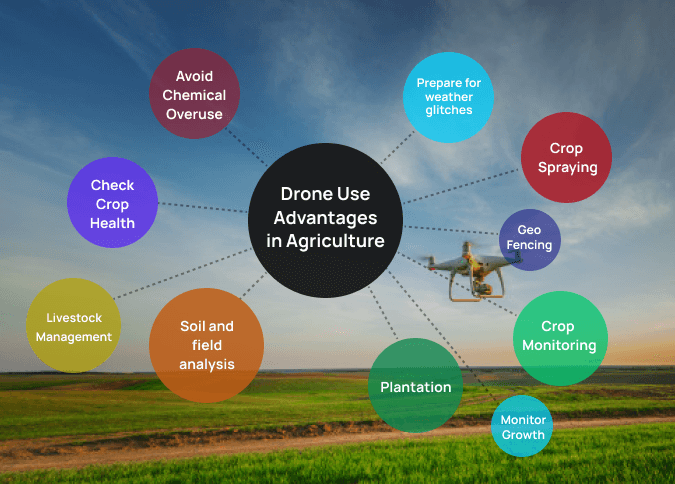
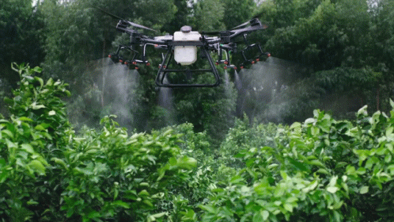
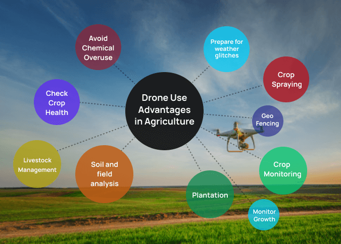

The use of drones in almost every sector of the economy is growing fast, but drone usage in the agricultural industry is booming. According to some reports, the agricultural drone market is expected to grow from a $1.2 billion(USD) industry in 2019 to $4.8 billion in 2024. From scouting to security, drone use will become more ubiquitous on large and small scale farms in a few short years. The information gathered by drones on farms is often used to better inform agronomic decisions and is part of a system generally referred to as ‘precision agriculture’. In many areas, drone use has become an essential part of large scale precision farming operations already. The data collected from drones recording fields help farmers plan their planting and treatments to achieve the best possible yields. Some reports indicate that using precision farming systems can increase yields by as much as 5%, which is a sizeable increase in an industry with typically slim profit margins. In this article we will take a look at some of the areas where drone technologies are already being used on farms, some new agricultural drone technologies being explored, and we will touch on some of the steps and challenges to adopting widespread drone use in agriculture.
One of the newer and less wide spread uses of drones in agriculture is for planting seeds. Automated drone seeders are mostly being used in forestry industries right now, but the potential for more widespread use is on the horizon. Planting with drones means very hard to reach areas can be replanted without endangering workers. They are also able to plant much more efficiently with a team of two operators and ten drones capable of planting 400,000 trees a day.
Drone use to apply spray treatments is already widespread in south-east Asia, with South Korea using drones for approximately 30% of their agriculture spraying. Drone sprayers are able to navigate very hard to reach areas, such as steep tea fields at high elevations. Drone sprayers save workers from having to navigate fields with backpack sprayers, which can be hazardous to their health. Drones sprayers delivery very fine spray applications that can be targeted to specific areas to maximize efficiency and save on chemical costs. Currently drone sprayer regulations vary widely between countries. In Canada, they are not currently legal as more testing needs to be done to understand the impact of spray drift. Some regulation proposals recommend that only trained professionals be tasked with flying spray drones as is the case with Yamaha, who does not sell the spray drones they manufacture, but leases spray drone services complete with licenced operators.
New research out of Australia is also creating exciting opportunities for drone use in agriculture. As climate change increasingly affects drought conditions, creating more efficient irrigation solutions is vital. Using microwave sensing, drones are able to capture very accurate soil health information including moisture levels without the plants getting in the way. This means water can be distributed in a field in the most efficient way in an effort to conserve resources.